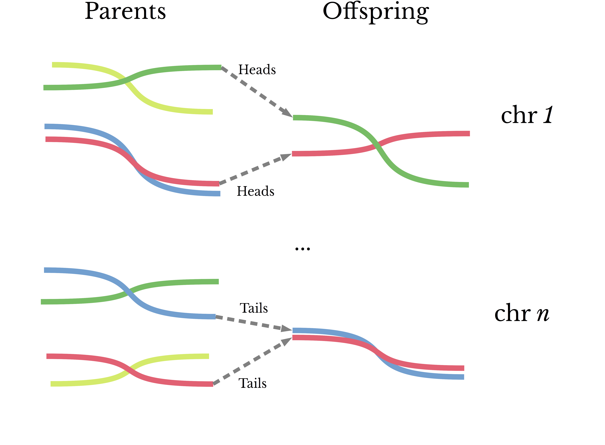
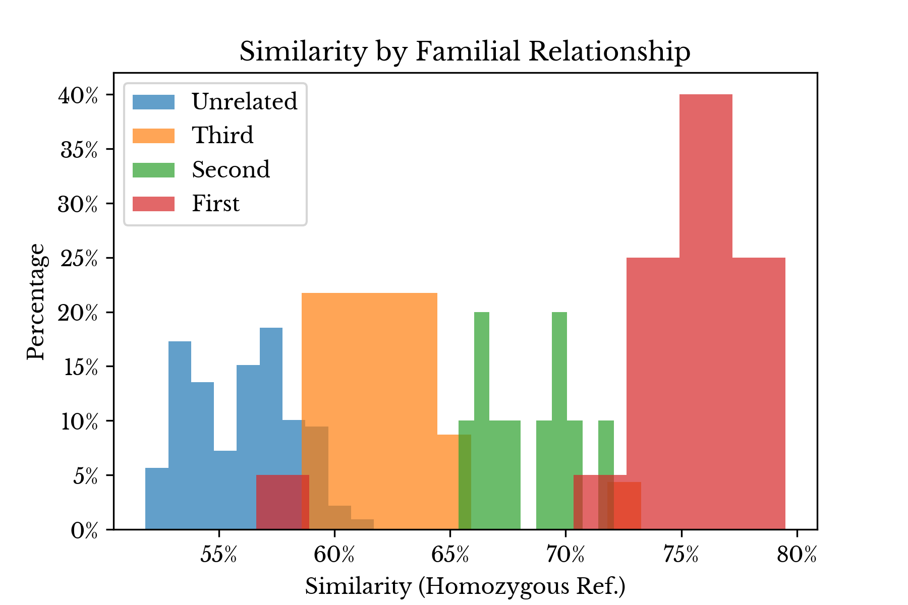
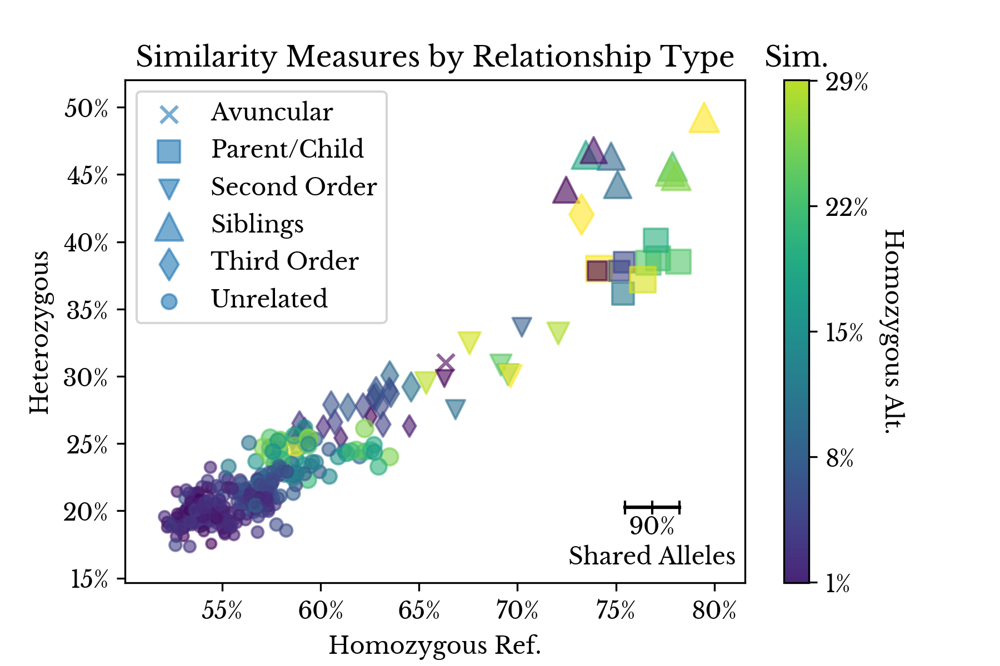
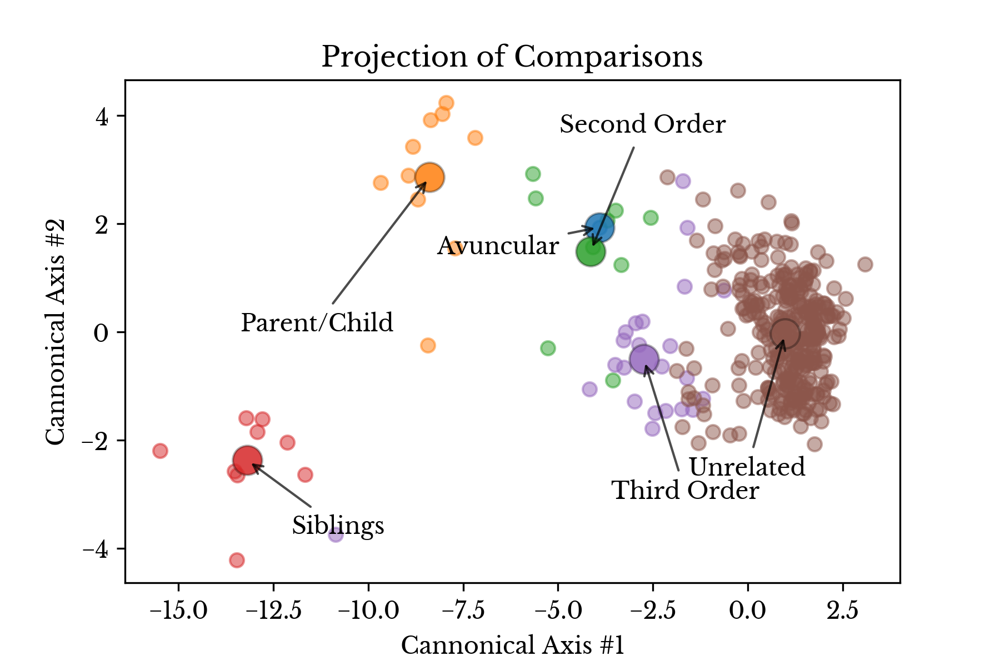
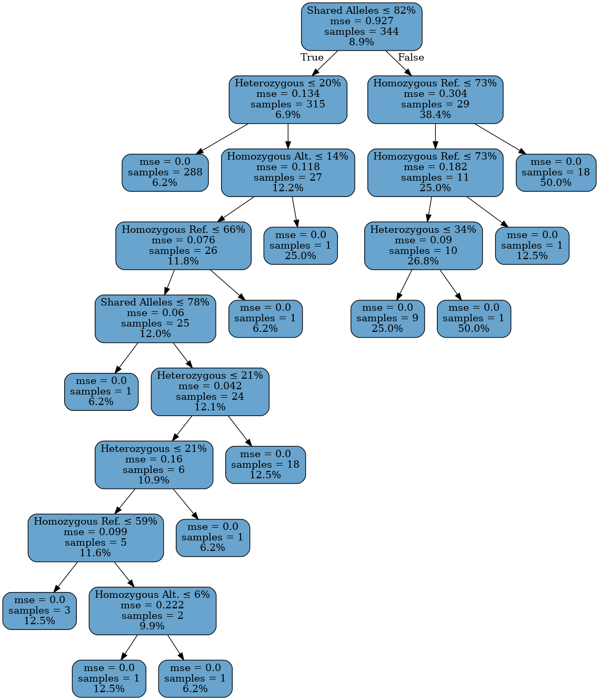
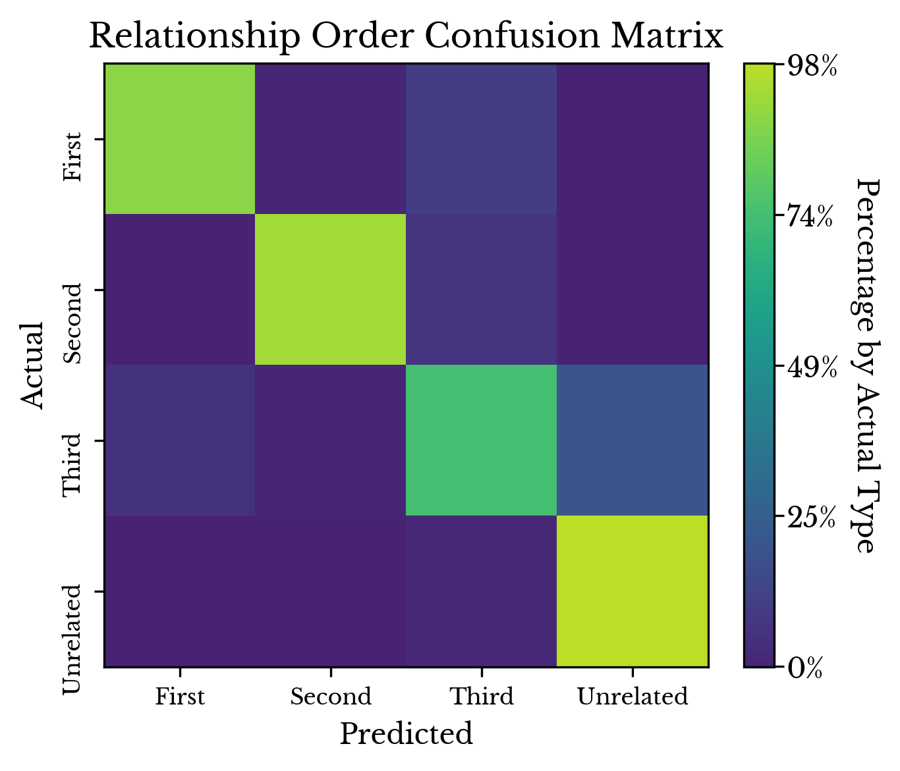

Identifying Family Relationships using Genetic Similarity Measures
Sat, 02 Jan 2021
Bioinformatics, Computer Science, Data Science, Data Visualization, Family, Genetics, Genomics, Machine Learning, Statistics
In general, are parents more genetically similar to their children or to their siblings? Why do some siblings look alike while others look completely different? How can the genetic similarity between two individuals be computed? This post uses biostatistics to explore genetic similarity and tries to answer these and other questions.
IGSR Data
This post again leverages data collected from the International Genome Sample Resource (IGSR) webpage [1]. The IGSR hosts sequence and other data for the thousands of samples made available by the 1000 Genomes Project. Though the majority are unrelated, there are a small number of participants that are related to others in the dataset. Fortunately, these related participants in the study are identified and further the type of relationship is specified. From the labels provided, six relationship types are delineated: avuncular, parent/child, sibling, second order, third order, and unrelated.
The majority (95%) of samples are unrelated to all other participants. This leaves 126 related samples, though many of these samples are not present in the phase 3 VCF files. After filtering, 57 unique relationships remain:
| Type |
Count |
| Third Order |
23 |
| Parent/Child |
10 |
| Siblings |
10 |
| Second Order |
9 |
| Avuncular |
1 |
Table 1: Relationship Type Counts
To emulate the imbalanced nature of this problem, 6 times this number of unrelated pairs are randomly selected from the population. This balance of related to unrelated samples is one factor which may be tuned to control the false positive rate of models fit to the data.
Mutations and Ancestry
Mutation rates may bring to mind viruses, bacteria, and antigenic escape, but the human genome also has its own rate of change. In fact, an estimated 100 to 200 mutations are introduced with each new generation [2]. Given that the human genome contains roughly 3.2 billion basepairs, the odds are quite small that a mutation will arise at a given position in the genome even within several generations.
At the same time, the average person has millions of mutations when compared with the reference genome. From this, it can be seen that the majority of mutations are passed down from generation to generation. For when a mutation occurs, and it is not fatal, the bearer may in turn pass down his or her newly mutated genes to his or her progeny. The result is that the majority of mutations an individual possesses are inherited and not novel.
In this way, mutations offer a window into ancestry and inheritance. And as demonstrated in past blog posts, genetic mutations may be effectively used for determining ancestry and for reconstructing viral phylogenies [3, 4, 5]. In this post, genetic mutations are again employed for producing measurements of genetic similarity. These measurements are then used to construct a mathematical model that can identify related individuals.
For the sake of ease and to broaden the applicability of the project, only single nucleotide polymorphisms (SNPs) are leveraged. Further, only SNPs that are commonly reported from direct-to-consumer companies are included. In this way, the models trained from the IGSR data may be used on data from other services such as
23andMe and others. Roughly 7000 SNPs are included in the final set.
Genetic Similarity
The genetic similarity between parents and children is frequently quoted as being 50%. This number is likely a reference to the coefficient of relationship, which utilizes information about a family tree to determine the consanguinity of two individuals [6]. The idea behind the measure stems from the genetic mechanisms of sexual reproduction and the process of meiosis; individuals typically receive one chromosome per pair per parent. However, there are a number of sources of genetic variation that do not neatly fit into this picture: mutation, recombination, and immigration [7].
Genetic similarity between siblings is somewhat more complex. Because of meiosis, offspring (typically) receive one chromosome from each parent for each pair of chromosomes. Taking into account the effects of crossing-over, an oversimplified model of the process to determine which copy of a gene is passed down from each parent to child might be a coin flip. In this way, the expected similarity between two siblings is 50%. It is theoretically feasible that the similarity between any two siblings be dramatically higher or lower than this. However, due to the size of the genome and both mutation and recombination rates, extreme deviations have a low probability of occurring.

Figure 1: A Simplified Model of Genetic Inheritance
It is perhaps interesting to note that 100% similarity between siblings happens much more frequently than the above over-simplified model would suggest. Identical twins share the same DNA, though this is achieved by another mechanism entirely.
Returning to the first principles of mutations and ancestry, it seems plausible that basic statistical measures should reliably estimate genetic similarity despite these complications. In terms of the data at hand, there are a finite number of possible outcomes when comparing the genotype of two individuals for a given chromosome and position. Neglecting aneuploidy, two individuals can have 0, 1, or 2 matching alleles at a given position [8]. For example, consider comparing genotypes for the most common reference and alternate alleles of the SNP rs12913832, a variant associated with eye color [9].
| Type |
AA |
GA |
AG |
GG |
| AA |
2 |
1 |
1 |
0 |
| AG |
1 |
2 |
2 |
1 |
| GA |
1 |
2 |
2 |
1 |
| GG |
0 |
1 |
1 |
2 |
Table 2: Genotype Comparison
Table 2 shows the possible outcomes for this single comparison. Taking
1/2 the average of this measure over all positions considered gives a statistical measure of similarity across the genome.
The Jaccard index may also be used to compare the similarity of two individuals [10]. The Jaccard index is defined to be
\[\displaylines{J(X, Y) = \frac{ | X \cap Y | } { | X \cup Y | }}\ .\]
Equation 1: The Jaccard Index
Thus, the two individuals genetic data is first encoded into sets so that the above set operations may be computed. Ultimately, four similarity measures are derived using these techniques and a matrix is formed computing each of these measure for each of the earlier selected pairs of individuals.
Similarity Distributions
Next, several charts are created to compare the theoretical similarities derived from the coefficient of relationship with the above outlined empirical measures. First, the relationships from the IGSR data are grouped by their coefficient of relationship and the distributions of the Jaccard index for each group are shown in histograms.

Figure 2: Genetic Similarity by Relationship Type
In Figure 2, the original relationship labels are combined into four types: first order, second order, third order, and unrelated. The first three of these types correspond to 50%, 25%, and 12.5% similarity according to the coefficient of relationship score. As can be seen, there is clear separation between the types in the majority of cases, though the upper and lower tails overlap in some places.
Due to the size of the dataset, it is easy to inspect some of these overlapping cases manually. In one instance, two individuals (NA20336 and NA20344) are reported as siblings, though they are quite genetically different. It is unclear from the data if this is a labeling error. Another pair (NA19238 and HG02814) are listed as being unrelated although their similarity scores suggest they may be third order relatives. Erring on the side of caution, these two pairs are discarded.

Figure 3: 2D Genetic Similarity by Relationship Type
Figure 3 shows a scatter plot that simultaneously depicts the four similarity measures. The
x,
y, and color axes correspond to the Jaccard index for heterozygous, homozygous reference, and homozygous alternate matches respectively. The size axis denotes the shared allele percentage.

Figure 4: LDA Projection of Relationship Type
Figure 4 shows a projection of the four metrics using linear discriminant analysis. In the plot, each sample pair is colored according to type of the relationship and the large markers correspond to the type centroids.
|
Avg. |
Std. |
| Rel |
|
|
| Avuncular |
65.78% |
--.--% |
| Parent/Child |
72.73% |
0.84% |
| Second Order |
66.79% |
1.59% |
| Siblings |
74.45% |
1.48% |
| Third Order |
62.46% |
2.50% |
| Unrelated |
57.15% |
1.85% |
Table 3: Grouped Similarity Statistics
Finally, Table 3 shows the mean and standard deviation of the average similarity score for each type of relationship. The four similarity scores are first scaled so that their contributions to the final average score are more proportional.
| Insight:
On average, fraternal and kinship relationships have roughly equivalent levels of similarity with the former type exhibiting more variability. |
As can be seen, kinship and fraternal relationships are similar in terms of the average, though fraternal relationships have more variability. This corroborates the discussion above and helps to answer one of the introductory questions in this post.
A Relationship Classifier
Given the relatively well-behaved nature of the data in Figure 2, it seems reasonable to choose a simple model to identify the familial relationship between two individuals. The simplifying assumption of this model is that different types of relationships have different ranges of genetic similarity. To identify the relationship between two individuals, simply compute the similarity scores and determine into which range the measures fall. For this reason, and for ease of interpretability, a decision tree model is chosen.
Now, given the above discussion about genetic similarity in kin and siblings, it is reasonable to question if the above similarity measures can accurately distinguish between relationships of the same order, for instance fraternal and kinship relationships. Since the inheritance mechanism is not fully random, characteristic patterns may arise when comparing such relationships. It may be possible to build a more complex model that accounts for this. However, due to the small sample size, such avenues are not explored further.
To help minimize issues distinguishing same order relatives, the labels are grouped by their corresponding coefficient of relationship: first order, second order, and so on. In this way, given two individuals, the model predicts the order of relationship between the two individuals. The order of genetic similarity
O produced by the model corresponds to a similarity of \(100 \times (2^{-O}) \%\) according to the coefficient of relationship.

Figure 5: Decision Tree for Determining Relationship Type
Figure 5 shows the fitted decision tree in its entirety. Internal nodes show the splitting condition, error, sample count, and average similarity at that position in that order. The leaf nodes do not have a splitting condition. The shallowness of the tree is a testament to the relative simplicity of the problem. In general, it is quite apparent from the similarity metrics if two people are related or not.
A large number of training and validation splits are constructed and the average confusion matrix over all splits is computed. Table 4 shows the confusion matrix for the model in tabular form while Figure 6 shows the matrix as a heatmap. Due to the imbalanced nature of the problem, the rows are normalized so that the relative rates may be more easily determined.
|
First |
Second |
Third |
Unrelated |
| First |
89.98% |
1.13% |
8.88% |
0.00% |
| Second |
1.44% |
81.95% |
4.33% |
12.27% |
| Third |
5.34% |
2.75% |
74.35% |
17.56% |
| Unrelated |
0.00% |
0.35% |
1.10% |
98.54% |
Table 4: Row Normalized Confusion Matrix
As can be seen, the model struggles distinguishing more distantly related individuals (third order relatives) from unrelated individuals. This agrees with intuition as well as with the overlapping distributions for these types seen in Figure 2.

Figure 6: Confusion Matrix Heatmap
The model accuracy could likely be improved by including more SNPs into the metric computations. At the same time, the more SNPs required by the model, the more values may be missing from variants that are less commonly tested by direct-to-consumer labs. Overall, the accuracy for the model seems satisfactory, especially for identifying close relatives.
References
{kind=link}
{kind=link}
{kind=link}
{kind=link}
{kind=link}
{kind=link}